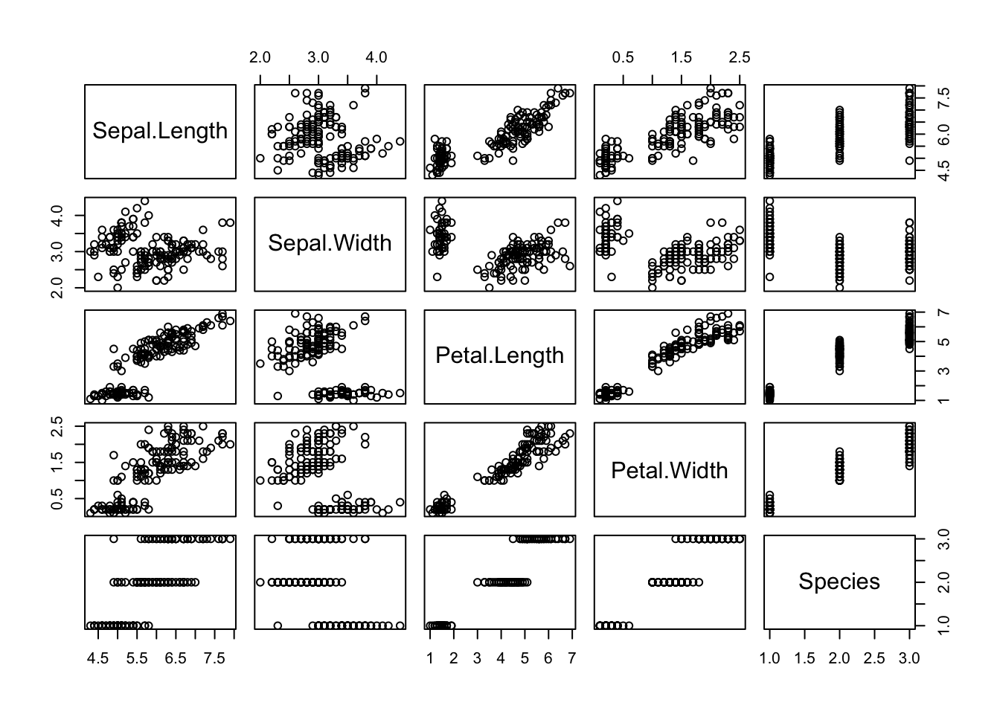

Titre de niveau 1
Les titres de niveau 1 sont habituellement réservés pour les ouvrages, aux titres de chapitres ou de parties.
Dans le cadre de la brochure, on utilisera plus volontiers les titres de niveau 2.
Aperçu de quelques éléments
R Markdown s’appuie sur Pandoc, on peut donc utiliser du gras, de l’italique, des exposants1, des indicesa, une police à chasse fixe, des spans et aussi des divs :
petit piège de pandoc
dans une div, il met le contenu textuel systématiquement dans un paragraphe
on peut rajouter une div dans une autre
Une footnotecontenu de la note de bas de page
Un graphique inséré par R Markdown
Un exemple de graphique inséré automatiquement par R Markdown :

Variables Pandoc
pagedown utilise un template Pandoc qui lui est spécifique, situé ici.
Pour l’utilisateur de R, c’est la voie privilégiée pour insérer des fragments HTML (dans le header, au début/à la fin du body).
Les ajouts de pagedown
La package pagedown amène Paged.js dans l’univers R Markdown.
Afin que les utilisateurs puissent travailler hors ligne, une copie de Paged.js est embarquée dans pagedown. Plus précisément, il s’agit de la version 0.1.32 (désolé, je n’ai pas eu le temps de faire la mise à jour).
Par ailleurs, pagedown fait beaucoup de choses “autour” de Paged.js :
il utilise un certain nombre de filtres Pandoc (ce n’est donc pas un simple
pandoc input.md --output output.html), voir https://github.com/rstudio/pagedown/tree/master/inst/resources/luail utilise quelques hooks Paged.js, voir https://github.com/rstudio/pagedown/blob/master/inst/resources/js/hooks.js
il intègre différentes feuilles de style basiques.
Fonctionnalités supplémentaires
Les demandes de la communauté d’utilisateurs ont conduit à intégrer dans pagedown des fonctionnalités supplémentaires décrites ici https://pagedown.rbind.io/#miscellaneous-features.
Je vois éventuellement deux fonctionnalités qui pourraient être utiles pour la brochure :
- sauts de page (https://pagedown.rbind.io/#page-breaks)
- insertion d’une image de couverture (https://pagedown.rbind.io/#covers)
Le worflow pour l’utilisateur de R
L’utilisateur de R va simplement écrire tout son contenu en markdown dans un fichier avec l’extension .Rmd.
La génération du fichier HTML (et des fichiers CSS et JS) s’effectue grâce au package R rmarkdown (voir le fichier Makefile).
L’utilisateur standard de R ne connaît généralement pas HTML et CSS. C’est la raison pour laquelle on s’appuie sur des packages qui vont générer le HTML et intégrer les feuilles de style afin de lui simplifier le travail.
Cependant, l’utilisateur avancé dispose de toutes les options (la plupart consistant à modifier l’en-tête YAML du fichier Rmd) pour rajouter des feuilles de style, des fragments HTML, du JavaScript, etc.